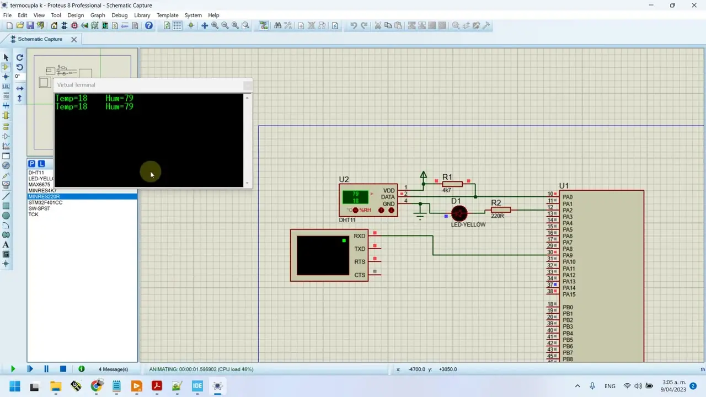
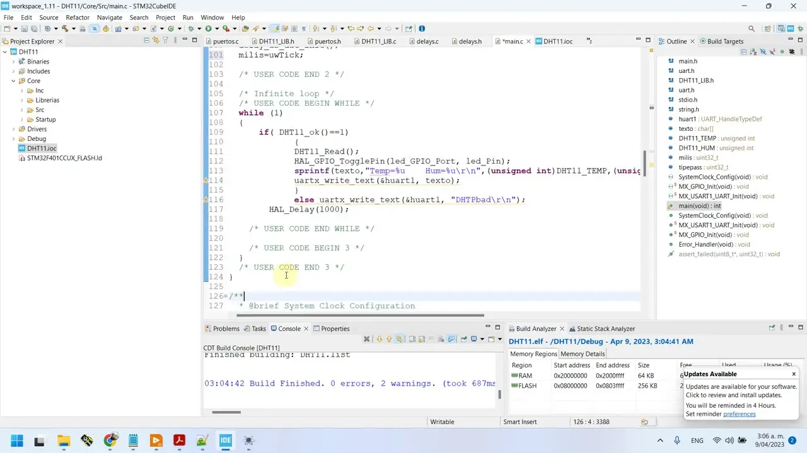

Configura PA3 como salida con la etiqueta led y agrégalo en Proteus. Se hace titilar con cada lectura del sensor.
Con el programa de la clase 47 el LED y la transmisión van al mismo ritmo, una vez por segundo: se pierde tiempo real en la comunicación.

